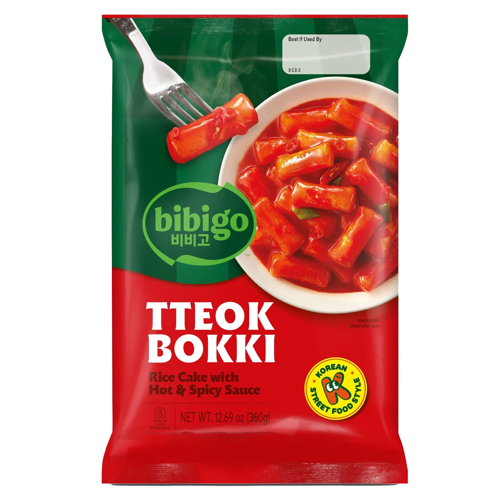
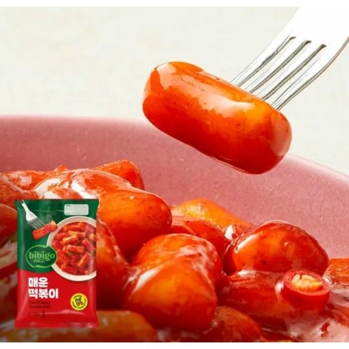
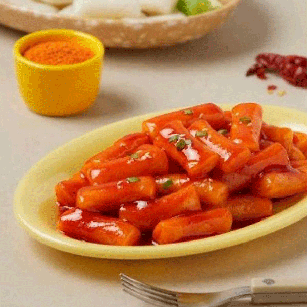

<div> <table style="border-collapse: collapse; width: 99.9809%;" border="1"><colgroup><col style="width: 49.9522%;"><col style="width: 49.9522%;"></colgroup> <tbody> <tr> <td> <div><span style="font-size: 14pt;"><strong>Roluri de orez in sos iute si condimentat Bibigo, 360g</strong></span></div> <div><span style="font-size: 14pt;">Pentru iubitorii de senzații tari, pachetul Bibigo Tteokbokki Hot &amp; Spicy de 360g este alegerea ideală! Experimentează varianta intens picantă a celebrei gustări coreene. Formatul generos &icirc;ți permite să &icirc;mparți cu cei dragi bucuria unor prăjituri de orez perfect texturate &icirc;ntr-un sos iute și plin de caracter.</span></div> </td> <td></td> </tr> <tr> <td></td> <td><span style="font-size: 14pt;">Priviți această textură perfectă! O singură &icirc;nghițitură de tteokbokki de la Bibigo te cucerește instant. Batoanele de orez sunt incredibil de moi și pufoase, &icirc;mbrăcate &icirc;ntr-un sos roșu intens și picant care &icirc;ți trezește toate simțurile. Gustul stradal autentic, gata de savurat direct &icirc;n farfuria ta.</span></td> </tr> <tr> <td><span style="font-size: 14pt;">O farfurie caldă, plină de culoare și arome irezistibile! Acest tteokbokki apetisant &icirc;ți aduce echilibrul perfect dintre dulce și iute. Prăjiturile din orez, moi și ușor elastice, sunt scăldate &icirc;ntr-un sos lucios și bogat, gata să &icirc;ți ofere o gustare reconfortantă &icirc;n cel mai scurt timp.</span></td> <td></td> </tr> </tbody> </table> </div>